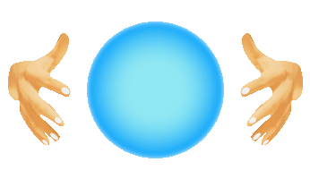
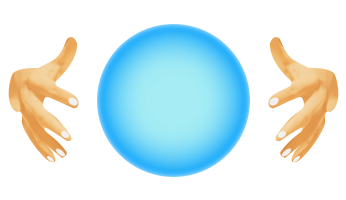

{{ temperature }}

PROGNOZA VREMENA ima svakojakih - kratkoročnih, srednjoročnih, dugoročnih. Subjektivnih i objektivnih. Dostupne su na mnogim internet stranicama, ali kojekakve kvalitete. Na WEB stranicama DHMZ-a pružena vam je mogućnost svakodnevnog praćenja, ne samo "subjektivnih" prognoza meteorologa za danas i sutra za Hrvatsku, posebice za Jadran i Zagreb, već i objektivnih "računalnih" sedmodnevnih prognoza za niz mjesta u Hrvatskoj i svijetu. Prve svaki dan pišu prognostičari, na temelju rezultata više prognostičkih modela i svog iskustva. Isto tako određuju i znak vremena koje će prevladavati pojedinog dana na određenom području. "Računalna" ili "kompjutorska", prognoza vremena izravan je rezultat jednog prognostičkog modela. Znak vremena određen je iz prognoze količine naoblake, te vrste i količine oborine određenog dana. Ako se pojavljuje kiša ili snijeg, to ne znači da će padati cijeli dan, nego barem u jednom njegovom dijelu. Pritom se srednja naoblaka i ukupna količina oborine izračunavaju iz četiri uzastopna prognostička šestsatna termina (6, 12, 18 i 00 UTC). Najviša i najniža temperatura zraka također su izravan rezultat modela, bez ispravaka prognostičara. Dosadašnje praćenje ostvarenja prognoza pokazalo je da temperatura izravno uzeta iz modela odstupa od stvarnih vrijednosti mnogo više od službenih prognoza meteorologa (što naravno ima svoje razloge). Stoga te sedmodnevne prognoze valja shvatiti tek kao trend vremena, tj. najavu dana u kojima se očekuju zatopljenja i/ili zahladnjenja, kao i oborine. Također, ne smije se zanemariti pouzdanost prognoza koja je sve manja, što je prognostičko razdoblje dulje.
Sport je fizička ili mentalna aktivnost koju čovjek izvodi po utvrđenom skupu pravila, u cilju natjecanja sa protivnikom ili protivničkim timom, uz primjenu propisanog sistema bodovanja na osnovu kojeg se utvrđuje pobjednik. Sportovi se dijele na dvije grupe: grupni i samostalni.